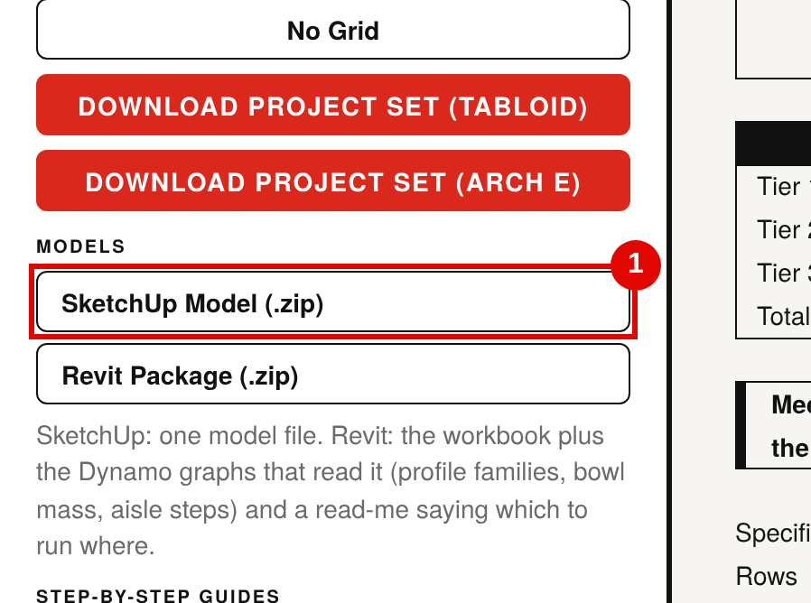

Sightline Schematic · Step-by-step guide 1 of 3
SketchUp: import the bowl mass
Download the SketchUp model and import it into SketchUp to create the bowl mass.
You need
- SketchUp Pro desktop (2017 or later)
- The bowl you want, open in Sightline Schematic
You get
- The whole bowl as closed solids, one per stand (tier and side)
- Precast aisle steps as components, and the pitch
- True size, in metres, origin at the field centre
Steps
Download the SketchUp model
In Sightline Schematic, scroll to Deliver and, under Models, click SketchUp model (.zip). The browser saves Stadium_Bowl_Mass_Sketchup.zip.

Unzip it
Right-click the zip and choose Extract All (Windows) or double-click it (Mac). SketchUp cannot import from inside a zip.
Open or start a SketchUp model
Open the model the bowl belongs in, or start a new one from a template in metres or feet and inches (either works: the file carries its own units, so it imports at true size).
To keep the bowl on the model origin, start with nothing selected and the drawing axes in their default place.
Import the .dae file
- In the file type list at the bottom of the dialog, choose COLLADA File (*.dae).
- Click Options…: tick Preserve drawing origin if your version offers it, and leave Merge coplanar faces off so every tread and riser stays a clean face. Click OK.
- Pick Stadium_Bowl_Mass_Sketchup.dae and click Import.
- If the bowl arrives on the cursor, click on the origin (where the red, green and blue axes meet) to drop it there.
The model is large: a full bowl with aisle steps can take a minute to import.
Check what came in
Open Window › Default Tray › Outliner. You will see one closed solid per stand (for example Tier 1 East sideline), the group Aisle steps (precast) with one component per aisle per row, and the pitch.

Check orientation and size

- Use the Tape Measure from the field edge (the point of focus) to the Tier 1 front riser. It must match the Sideline Depth 1 shown in Sightline (35'-0", 10.668 m, in this example).
- To put north up the green axis, select everything, use Rotate about the origin and turn it 90° clockwise seen from above. Or leave the model as is and set north with Window › Default Tray › Shadows and the Solar North tool.
Use it as a mass
- Select all the stands and use Make Group, then give the group a Tag such as Bowl mass, so you can hide it or turn it grey in scenes.
- Each stand is a solid: Entity Info shows its volume, and the Solid Tools (Outer Shell, Intersect, Subtract) work on it.
- Hide the Aisle steps (precast) group for a lighter model while massing.
- Changed the bowl in Sightline? Download again and import again: delete the old groups first, or import into a new model and copy across.
If something looks wrong
| What you see | Why, and what to do |
|---|---|
| COLLADA is not in the file type list | Use SketchUp Pro desktop. SketchUp for Web and the free plans do not import .dae files. |
| The bowl is 1,000 times too big or too small | The file was converted on the way. Import the original .dae from the zip; it is in metres. |
| The bowl is not on the origin | It was dropped where you clicked. Use Move from the centre of the pitch to the origin, or import again with Preserve drawing origin ticked. |
| Faces look dark or see-through | Some faces show their back side. Select the stand, right-click, Reverse Faces, or use Orient Faces. |